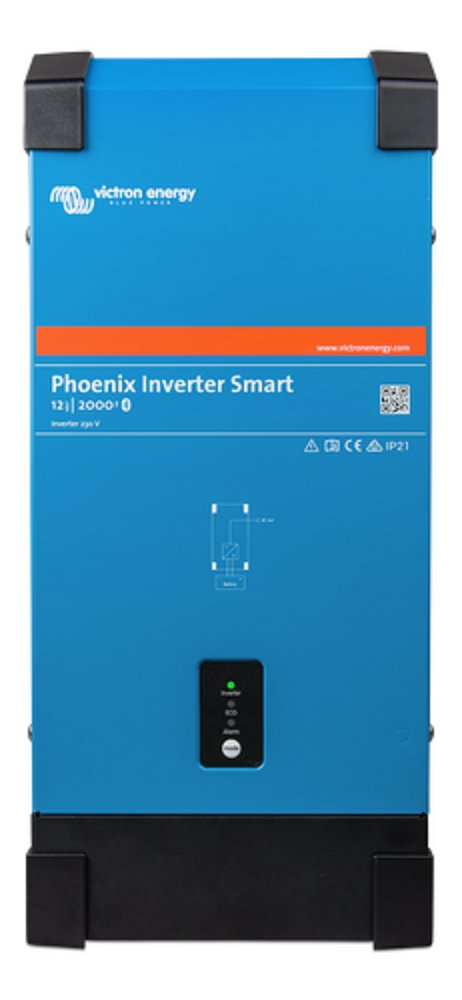

SMA Sunny Boy
The Sunny Boy is perfect for someone who wants a small but powerful
inverter. This inverter is very lightweight which makes it easy to
install and carry around. It is also very small, so it can easily be
installed while taking up minimal space. The Sunny Boy has a quick
web interface which makes it easier for the user to comission it to
a smartphone or tablet. Besides the small and light design of the
Sunny Boy it also uses the optimization of the energy yield in
intelligent ways. This means that the operators can ensure that the
system always generates maximum yields.

SMA The Sunny Tripower
Just like the Sunny Boy, the Sunny tripower is a small and
lightweight inverter. It is easy to install and takes up very
minimals pace, which is favorable for users that live in smaller
homes. The Sunny tripower has even more power than the Sunny Boy. It
combines the inverter performance with ease. This makes it very
accessible and uncomplicated for users. The operators and installers
are always up to date with the Sunny Tripower. If you use more solar
power in your home, smart energy management will be added to the
systems.
 Shop Link!
Shop Link!
© Copyright ikwilzonneenergie
Victron Phoenix Smart Inverter
The Victron Phoenix Inverter Smart is an inverter from a different
line of inverters. It has a metal casing and is slimmer compared to
the Sunny boy and Sunny Tripower. This inverter has enough power to
supply your plug in appliances. Inside of this inverter sits a
toroidal transformer. This transformer provides a high peak power
surge capacity. Besides being a powerful inverte rit also has
bluetooth on board. Setting up the Victron Phoenix Inverter Smart
has never been easier.

Shop Link!
© Copyright ikwilzonneenergie